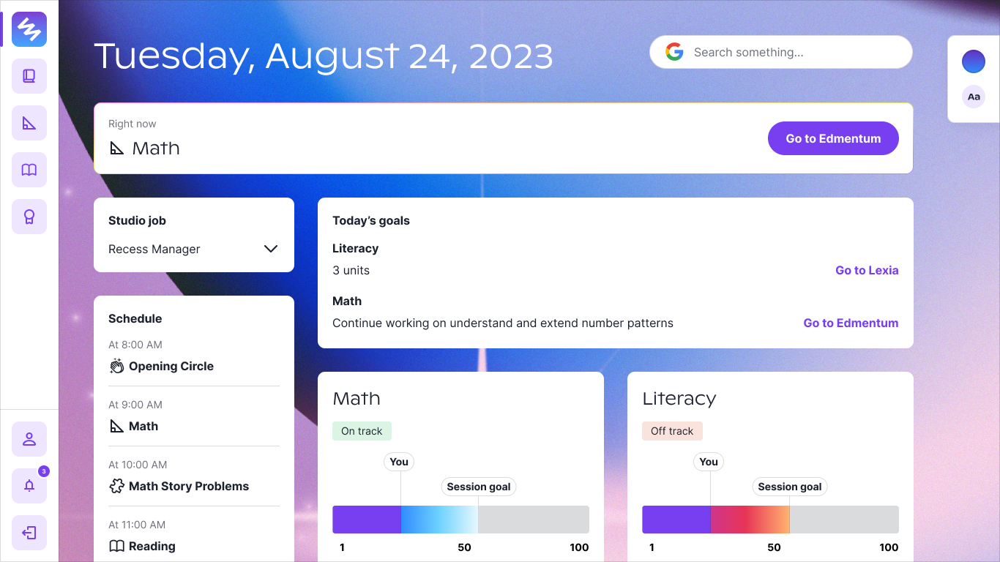

Primer went through a big transition in the year and a half I was there. We switched our whole product from Clubs to Microschools.
With that transition came a lot of design changes!
I had to transition our design system to one that had a similar audience, but a different voice, brand, and purpose.
We also needed to do it with speed as we had to get this out before the school year started.
This impacted the entire school experience for 300 students, 20+ teachers, families, and admins.
Problem
Primer Clubs was all about kids pursuing their passions together in an online space.
It was about taking kids seriously. We love that motto and wanted to imbue that in microschools as well.
But the needs of microschools were very different. We needed a whole system that could support our students, teachers, and families.
So how do we translate the design system to embody that?
What are Clubs?
Clubs was an online space for kids to pursue their interests in the format of clubs.
We had a club for chess, artists, gamers, naturalists, musicians, and many more!
Kids could also create their own clubs and become leaders in the Primer community.
In these clubs, kids got to work on challenges created by the Primer team that were related to their club.
Chess Club was one of the last clubs we made. Read the case study here!
Kids also could meet live through Rooms which was an audio-only activity space.
Rooms were where friendships and passions came together.
In Clubs, the goal was magic! We wanted this to be an inspiring place for kids.
We used a lot of magical illustrations and went through a rebrand in early 2022 with Jessica Strelioff and Danielle LaRoy.
You can see the case study here. Here are some highlights:
In Clubs, the goal was magic! We wanted this to be an inspiring place for kids.
What are Microschools?
Microschools are small schools with just one class of about 15 students. Our education model is self-paced learning for all students.
To support this format, we needed to create tools for...
Students to learn at their own pace and set their goals
Families to understand their student's progress
Educators to track and support their students' learning and social needs
Admin team to support admissions and classroom tasks
We wanted to continue that inspiration and wonder from the Clubs branding, while also shifting towards something more structured like schools.
We wanted families to see that we are a serious school, while keeping some of that magic (just toned down a bit).
We did another quick brand sprint with Jessica and Danielle.
Some highlights:
Another inspiring narrative, microschools edition.
They also helped us redesign the website to be microschools-forward.
At Primer, we believe that big change starts small.
With classrooms that give every student the attention they deserve and an environment
where everyone can feel both challenged and supported.
The Principles (kinda)
We didn't have official design principles, but I knew the design system should embody
a mix of our operating principles and microschools values:
Take kids seriously.
Magic is a must!
Enhance the experience, don't replicate it.
Now for translating all of that into our design system!
Note: We had a short turnaround time for this, ~6 months.
I was the only designer on the team so I was managing the design system while designing the product as well.
Multi-select dropdowns
I noticed the need for multi-select as we created more admin-related tasks and actions.
I expanded the dropdown component to include multi-select items.
Existing components I used to create the multi-select.
The multi-select dropdown in its glory.
One of the use cases was creating incident reports.
Educators should be able to select multiple at a time because incidents often aren't defined by one category.
Tables
School systems need tables for all sorts of directories, rostering, and lists in general.
You might think tables are all the same, but they aren't!
They are often really dense and difficult to read. At least, that was the case with many school systems I found.
I noticed increasing spacing around the row helped with readability.
Tables and their rows.
Creating space allowed for a more pleasant experience as your eyes weren't strained trying to find the exact row you need
and taking in all the information at one time.
Some use cases included directories, rosters, and documents.
Here's the student directory!
Banners
We needed more obvious notifications and errors for our users.
Previously, our notifications to kids on Clubs were mostly about comments and posts.
Now we had uses cases like document errors, attendance alerts, and more that required action.
Banners galore.
Here's the banner in action on the parent dashboard.
Banners for all.
Illustrations
Illustrations were one of the main ways we created magic.
In Clubs, we would crop the illustrations for club cover images.
For Microschools, I isolated the main objects and used them for empty states and backgrounds.
The beautiful illustrations ready to be collaged.
Here are some places we used the illustrations!
Empty states on the parent dashboard (and in the product in general).

Zoomed in illustration for abstract background options for student dashboards.
Learnings & reflection
A design system never ends, but in a short turnaround time, the design system evolved into one that fits Microschools
while retaining the spirit of Clubs.
Though my main focus during this transition was the product, I thoroughly enjoyed getting into the details of
each component and thinking about all the various states! Excited to see how it grows as Primer builds out the schools.